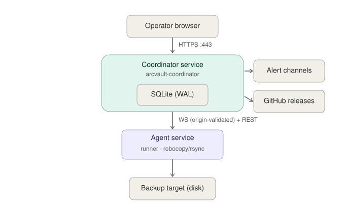
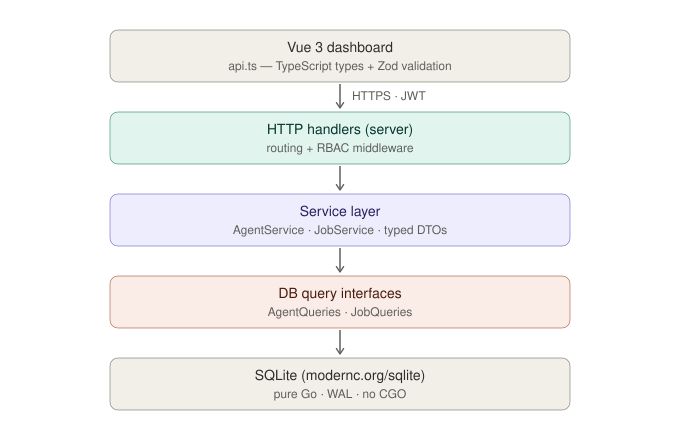
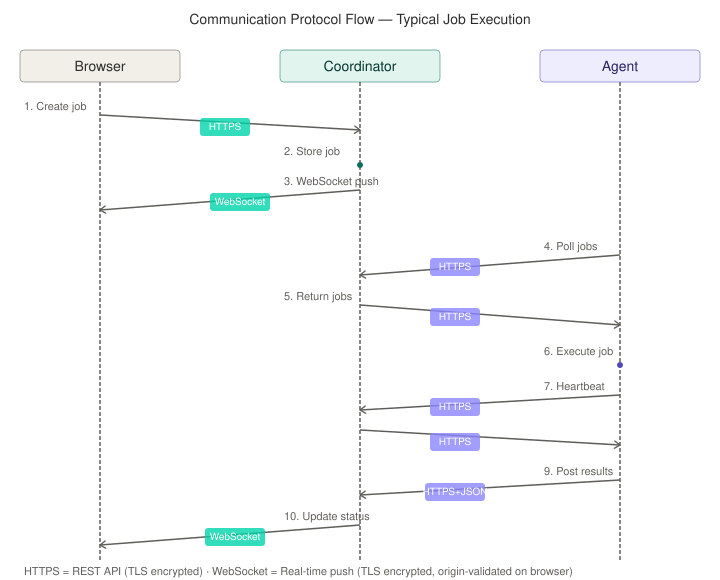
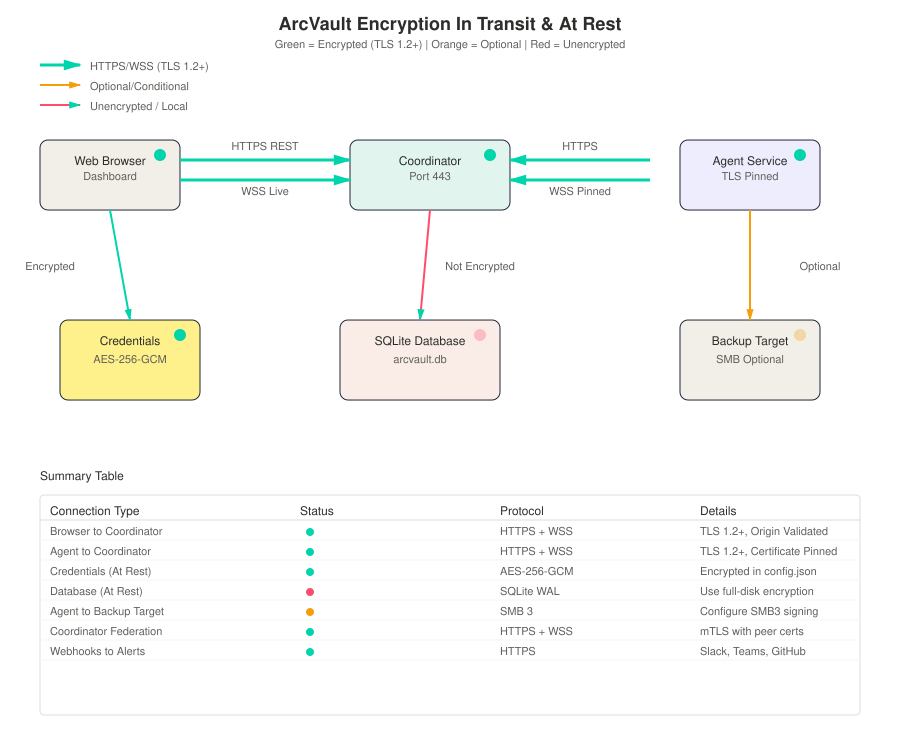
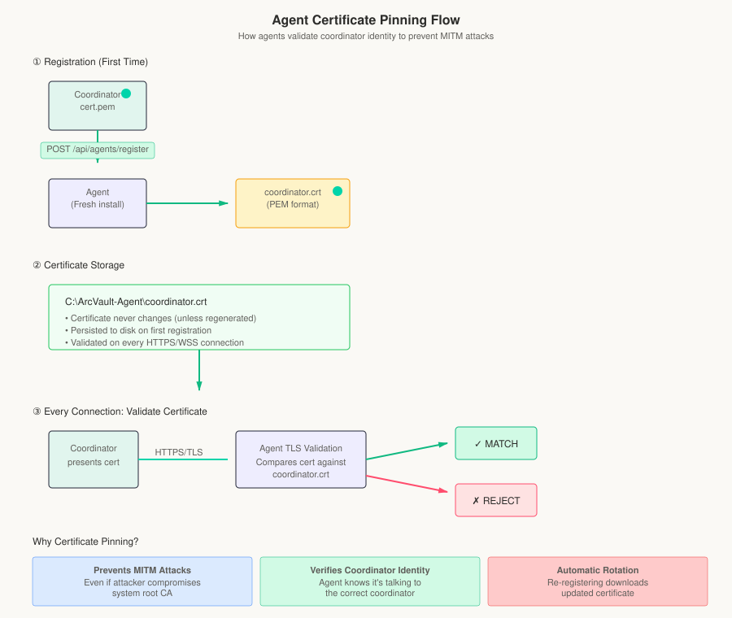
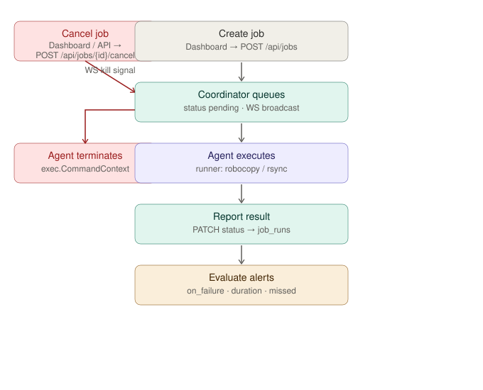

Who talks to whom, and over what.

Inside the coordinator: each request flows top-down through the three-layer split (handlers → service → DB interface), with the Zod contract and RBAC guarding the boundaries.

Chronological sequence of protocol exchanges during a typical backup job.

Complete visual representation of encryption mechanisms across all components and data flows.

Transport protocols and message formats between components. All data is encrypted in transit via TLS 1.2+
| Path | Protocol | Encryption | Auth |
|---|---|---|---|
| Browser → Coordinator | HTTPS (443) | ✅ TLS 1.2+ | JWT |
| Browser ↔ Coordinator (live) | WebSocket over TLS | ✅ TLS 1.2+ (WSS) | JWT + origin-validated |
| Agent → Coordinator | HTTPS | ✅ TLS 1.2+ (pinned cert) | Bearer token |
| Agent ← Coordinator | HTTPS | ✅ TLS 1.2+ (pinned cert) | Bearer token |
| Agent ↔ Coordinator (events) | WebSocket over TLS | ✅ TLS 1.2+ (WSS, pinned) | Bearer token |
| Agent → Backup target | Local FS / SMB | ⚠️ SMB encryption (optional) | Windows credentials |
| Coordinator ↔ Coordinator | HTTPS + WebSocket | ✅ TLS 1.2+ (mTLS) | Peer certs |
| Coordinator → Alert channel | HTTPS (webhooks) | ✅ TLS 1.2+ | API key / token |
| Coordinator → GitHub | HTTPS (REST API) | ✅ TLS 1.2+ | Rate-limited anon |
How agents validate coordinator identity to prevent MITM attacks. Agents download and pin the coordinator certificate on first registration, then verify every subsequent connection.

Coordinator generates a self-signed TLS certificate during init. Certificate includes SANs (Subject Alternate Names) for IP addresses and hostnames (e.g., 127.0.0.1, localhost, hostname).
Agent downloads coordinator's certificate during registration and stores it as coordinator.crt. All subsequent HTTPS + WebSocket connections validate against this pinned certificate. Prevents MITM attacks even if system root CA is compromised.
Use coordinator rekey-cert to regenerate TLS certificate if hostname/IP changes. Installer copies coordinator cert to agents during combined install.
TLS 1.2+ (enforced by Go's crypto/tls package); AES-256 ciphers negotiated at handshake.
Browser WebSocket connections checked against AllowedOrigins config (default: localhost). Rejects cross-origin requests in production mode. Kill-switch env var for emergency rollback if needed.
WSS (WebSocket Secure) — runs over established TLS connection, inherits all TLS protections.
Browser sends JWT in WebSocket handshake; agents use Bearer tokens. Same validation as REST API.
Backup credentials (passwords, SSH keys) encrypted with AES-256-GCM using a credential key stored in config.json (or env var fallback).
SQLite with WAL mode (not encrypted by default). Consider full-disk encryption for production deployments containing sensitive credentials.
Dashboard (Vue 3): GET /api/jobs, GET /api/agents, POST /api/jobs, GET /api/users, etc.
WebSocket: GET /ws (job updates, agent status, live logs)
Auth: POST /api/auth/login, POST /api/auth/refresh, PUT /api/auth/change-password
Registration: POST /api/agents/register (initial handshake, TLS cert exchange)
Heartbeat: POST /api/agents/{id}/heartbeat (every 30s, includes status/uptime)
Job polling: GET /api/jobs (agent queries for assigned work)
Job results: POST /api/jobs/{id}/results (exit code + output after completion)
Status updates: PATCH /api/jobs/{id}/status (running → complete state change)
WebSocket: GET /ws/agent (job assignment push notifications)
Updates: GET /api/update/check, POST /api/update/apply, POST /api/agents/{id}/update
Downloads: GET /downloads/installer (agent installer binary)
Bootstrap: GET /api/admin/bootstrap.ps1 (Windows agent setup script with cert pinning)
Transport: HTTPS (mTLS with peer certificates) + WebSocket (state sync)
Purpose: Event forwarding, failover detection, distributed job coordination
Audit: GET /api/audit/commands, GET /api/audit/user-actions, GET /api/audit/stats (full user action audit trail)
Alert rules: GET /api/alert-rules, POST /api/alert-rules (per-job configurable rules: on_failure, duration_exceeded, missed_schedule)
Alert history: GET /api/alert-history (30-day retention by default)
The runtime path of a single backup job, from creation to the alert engine. Color marks which component owns each step.

Note: Jobs can be cancelled mid-execution via POST /api/jobs/{id}/cancel (operator+). The cancel command is sent to the agent over WebSocket, which terminates the running child process (robocopy/rsync) and reports the cancelled status back.
✅ All network traffic between browser, coordinator, and agents is encrypted in transit via TLS.
✅ Agents use certificate pinning to prevent MITM attacks.
✅ WebSocket connections validate origin in production mode.
✅ Credentials encrypted with AES-256-GCM at rest.
✅ CORS enforced with explicit origin whitelist (rejects wildcard "*").
✅ HSTS headers configurable for TLS deployments via coordinator config.json.
✅ Command audit logging with non-whitelisted program detection (Session 28).
✅ Job cancellation flow via WebSocket: POST /api/jobs/{id}/cancel → WebSocket kill signal → agent terminates child process.
⚠️ SMB connections from agent to backup target use SMB3 with optional signing/encryption (configured via Windows SMB policy).
⚠️ SQLite database not encrypted by default (use full-disk encryption for production).
🔑 For production: enable TLS cert renewal before expiry, configure full-disk encryption on coordinator machine, and back up config.json (contains credential key).